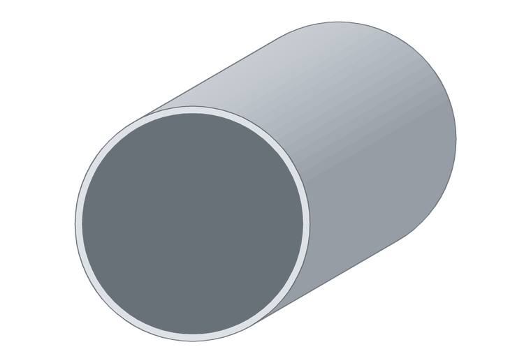

Tubos redondos
Se usan en barandas, estructuras livianas, muebles, soportes y guías. Al ser huecos dan buena rigidez con poco peso.

Tubos redondos
¿Necesitás una medida que no está en la tabla? Trabajamos con siete extrusores: si existe en el país, lo conseguimos.
Medidas disponibles
228 medidas en stock y a pedido, en milímetros. Tocá Ver para abrir la medida.
| Ø exterior | Espesor | |
|---|---|---|
| 8 | 1 | Ver |
| 9,5 | 0,95 | Ver |
| 9,5 | 1 | Ver |
| 9,5 | 1,75 | Ver |
| 9,52 | 1,5 | Ver |
| 11 | 1,2 | Ver |
| 11,5 | 2,4 | Ver |
| 12,7 | 1,2 | Ver |
| 12,7 | 1,5 | Ver |
| 12,7 | 2 | Ver |
| 13 | 1,5 | Ver |
| 13 | 2 | Ver |
| 15,8 | 1 | Ver |
| 15,87 | 1 | Ver |
| 15,87 | 1,25 | Ver |
| 15,87 | 1,5 | Ver |
| 15,87 | 2 | Ver |
| 15,87 | 3 | Ver |
| 15,87 | 5 | Ver |
| 16 | 1,7 | Ver |
| 16 | 2 | Ver |
| 17,5 | 4 | Ver |
| 18 | 1 | Ver |
| 18 | 1,5 | Ver |
| 18 | 4,35 | Ver |
| 18 | 5,7 | Ver |
| 18,5 | 4,5 | Ver |
| 19 | 0,9 | Ver |
| 19 | 1,25 | Ver |
| 19 | 1,3 | Ver |
| 19 | 1,5 | Ver |
| 19 | 2,2 | Ver |
| 19 | 9 | Ver |
| 19,05 | 1,15 | Ver |
| 19,05 | 1,5 | Ver |
| 19,05 | 2 | Ver |
| 19,05 | 2,5 | Ver |
| 19,05 | 3 | Ver |
| 19,05 | 4 | Ver |
| 19,3 | 1,5 | Ver |
| 20 | 2 | Ver |
| 22 | 1 | Ver |
| 22 | 1,3 | Ver |
| 22 | 1,6 | Ver |
| 22 | 2 | Ver |
| 22,22 | 1 | Ver |
| 22,22 | 1,15 | Ver |
| 22,22 | 1,25 | Ver |
| 22,22 | 1,3 | Ver |
| 22,22 | 1,5 | Ver |
| 22,22 | 1,8 | Ver |
| 22,22 | 2 | Ver |
| 22,22 | 2,5 | Ver |
| 22,22 | 3 | Ver |
| 22,22 | 4 | Ver |
| 23 | 1 | Ver |
| 23 | 1,3 | Ver |
| 23 | 1,5 | Ver |
| 23 | 1,7 | Ver |
| 23 | 1,8 | Ver |
| 23 | 2 | Ver |
| 23 | 2,5 | Ver |
| 23 | 3 | Ver |
| 23 | 4 | Ver |
| 23 | 5,1 | Ver |
| 23 | 6,25 | Ver |
| 23,3 | 1,3 | Ver |
| 23,5 | 5,25 | Ver |
| 23,5 | 5,75 | Ver |
| 23,5 | 6,25 | Ver |
| 23,5 | 6,75 | Ver |
| 23,5 | 7,2 | Ver |
| 24 | 3 | Ver |
| 25 | 1 | Ver |
| 25 | 1,15 | Ver |
| 25 | 2 | Ver |
| 25 | 3 | Ver |
| 25 | 5 | Ver |
| 25,4 | 1 | Ver |
| 25,4 | 1,25 | Ver |
| 25,4 | 1,5 | Ver |
| 25,4 | 2 | Ver |
| 25,4 | 2,5 | Ver |
| 25,4 | 3 | Ver |
| 25,4 | 3,4 | Ver |
| 25,4 | 4 | Ver |
| 25,4 | 5 | Ver |
| 25,5 | 1,5 | Ver |
| 25,5 | 2,2 | Ver |
| 25,8 | 1,2 | Ver |
| 25,8 | 1,5 | Ver |
| 28 | 0,9 | Ver |
| 28,4 | 0,9 | Ver |
| 28,5 | 1,5 | Ver |
| 29 | 1 | Ver |
| 29 | 1,5 | Ver |
| 29 | 1,8 | Ver |
| 30 | 1,25 | Ver |
| 30 | 1,5 | Ver |
| 30 | 2 | Ver |
| 30 | 3 | Ver |
| 30 | 4 | Ver |
| 30 | 5 | Ver |
| 30 | 7,5 | Ver |
| 30 | 9 | Ver |
| 30 | 14 | Ver |
| 30,4 | 5,95 | Ver |
| 30,5 | 1,5 | Ver |
| 30,6 | 3 | Ver |
| 30,6 | 3,3 | Ver |
| 30,6 | 6,05 | Ver |
| 30,6 | 8,3 | Ver |
| 31 | 4,25 | Ver |
| 31,25 | 1,5 | Ver |
| 31,7 | 1 | Ver |
| 31,7 | 1,5 | Ver |
| 31,75 | 1,25 | Ver |
| 31,75 | 1,5 | Ver |
| 31,75 | 2 | Ver |
| 31,75 | 2,5 | Ver |
| 31,75 | 3 | Ver |
| 31,75 | 4 | Ver |
| 31,75 | 5 | Ver |
| 32 | 1,5 | Ver |
| 32 | 2 | Ver |
| 32 | 3 | Ver |
| 32 | 5,75 | Ver |
| 34,3 | 1,6 | Ver |
| 34,92 | 1,5 | Ver |
| 34,92 | 2 | Ver |
| 34,92 | 2,5 | Ver |
| 34,92 | 3 | Ver |
| 34,92 | 4 | Ver |
| 34,92 | 5 | Ver |
| 35 | 2,5 | Ver |
| 35 | 7,25 | Ver |
| 36 | 5,9 | Ver |
| 37 | 1 | Ver |
| 37 | 1,5 | Ver |
| 38 | 1,5 | Ver |
| 38 | 2 | Ver |
| 38,1 | 1,5 | Ver |
| 38,1 | 2 | Ver |
| 38,1 | 2,5 | Ver |
| 38,1 | 3 | Ver |
| 38,1 | 4 | Ver |
| 38,1 | 5 | Ver |
| 38,4 | 1,5 | Ver |
| 38,5 | 2 | Ver |
| 39 | 3,25 | Ver |
| 40 | 1,5 | Ver |
| 40 | 1,8 | Ver |
| 40 | 2,5 | Ver |
| 41,8 | 1,5 | Ver |
| 42 | 3,5 | Ver |
| 44,45 | 1,2 | Ver |
| 44,45 | 1,5 | Ver |
| 44,45 | 3 | Ver |
| 45 | 1 | Ver |
| 45 | 1,3 | Ver |
| 45,5 | 5 | Ver |
| 48 | 3 | Ver |
| 48,5 | 4 | Ver |
| 50 | 1,1 | Ver |
| 50 | 1,4 | Ver |
| 50 | 2 | Ver |
| 50 | 3 | Ver |
| 50 | 12 | Ver |
| 50,8 | 0,9 | Ver |
| 50,8 | 1,5 | Ver |
| 50,8 | 2 | Ver |
| 50,8 | 3 | Ver |
| 50,8 | 3,5 | Ver |
| 50,8 | 4 | Ver |
| 50,8 | 5 | Ver |
| 50,8 | 20,4 | Ver |
| 51,8 | 2 | Ver |
| 52 | 2 | Ver |
| 52,5 | 1,2 | Ver |
| 54,5 | 2 | Ver |
| 60 | 1 | Ver |
| 60 | 1,2 | Ver |
| 60 | 1,5 | Ver |
| 60 | 5 | Ver |
| 63 | 5 | Ver |
| 63 | 8 | Ver |
| 63,5 | 1 | Ver |
| 63,5 | 2 | Ver |
| 63,5 | 3 | Ver |
| 67 | 1,5 | Ver |
| 68 | 5,5 | Ver |
| 76 | 1,4 | Ver |
| 76 | 6 | Ver |
| 76,2 | 1 | Ver |
| 76,2 | 1,5 | Ver |
| 76,2 | 2 | Ver |
| 76,2 | 3 | Ver |
| 76,2 | 4 | Ver |
| 80 | 2 | Ver |
| 89 | 7,5 | Ver |
| 90 | 3 | Ver |
| 90 | 9 | Ver |
| 94,5 | 6,5 | Ver |
| 100 | 5 | Ver |
| 101,6 | 1,2 | Ver |
| 101,6 | 1,5 | Ver |
| 113 | 9 | Ver |
| 114,3 | 3,05 | Ver |
| 127 | 1,3 | Ver |
| 127 | 1,7 | Ver |
| 127 | 2 | Ver |
| 127 | 5 | Ver |
| 150 | 4,6 | Ver |
| 150 | 7 | Ver |
| 152,4 | 1,4 | Ver |
| 152,4 | 1,7 | Ver |
| 152,4 | 4,6 | Ver |
| 166 | 7 | Ver |
| 167 | 9,5 | Ver |
| 167 | 12 | Ver |
| 177,8 | 1,8 | Ver |
| 177,8 | 10,9 | Ver |
| 203,2 | 1,9 | Ver |
| 203,2 | 4 | Ver |
| 203,2 | 7 | Ver |
| 204,5 | 7,65 | Ver |
| 254 | 2,4 | Ver |
| 254 | 4 | Ver |
Preguntas frecuentes
¿Cuántas medidas hay disponibles?
228 medidas de tubos redondos, consolidadas de todos nuestros proveedores en un solo catálogo. Si no ves la que necesitás, escribinos: puede estar disponible a pedido.
¿En qué largo se venden?
El largo estándar es de 6 metros. Algunas medidas se entregan en 3 metros, y también cortamos a medida.
¿Qué aleación es?
Aluminio 6063, la aleación estándar para perfilería. Para aplicaciones que necesiten otra aleación o temple, consultanos.
¿Lo cortan a medida?
Sí. Deciles el largo que necesitás y cuántas piezas, y te pasamos el precio con el corte incluido.